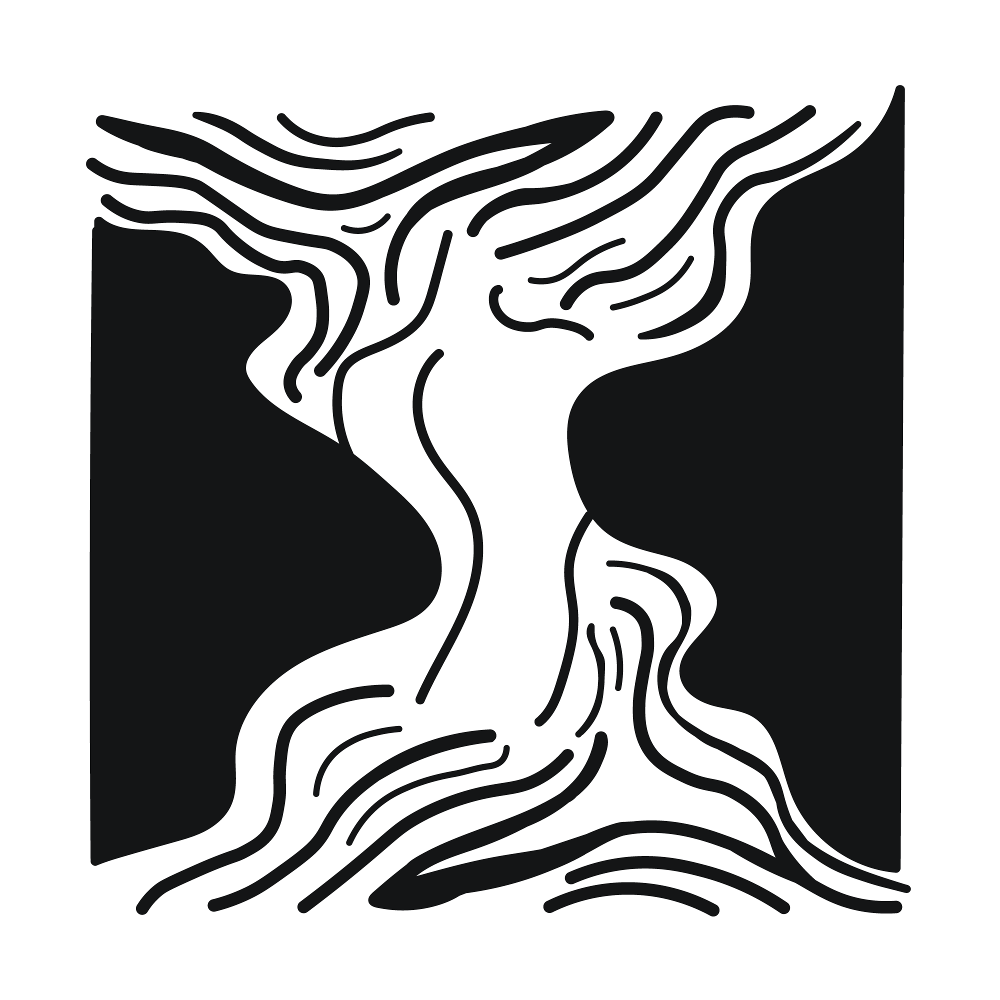
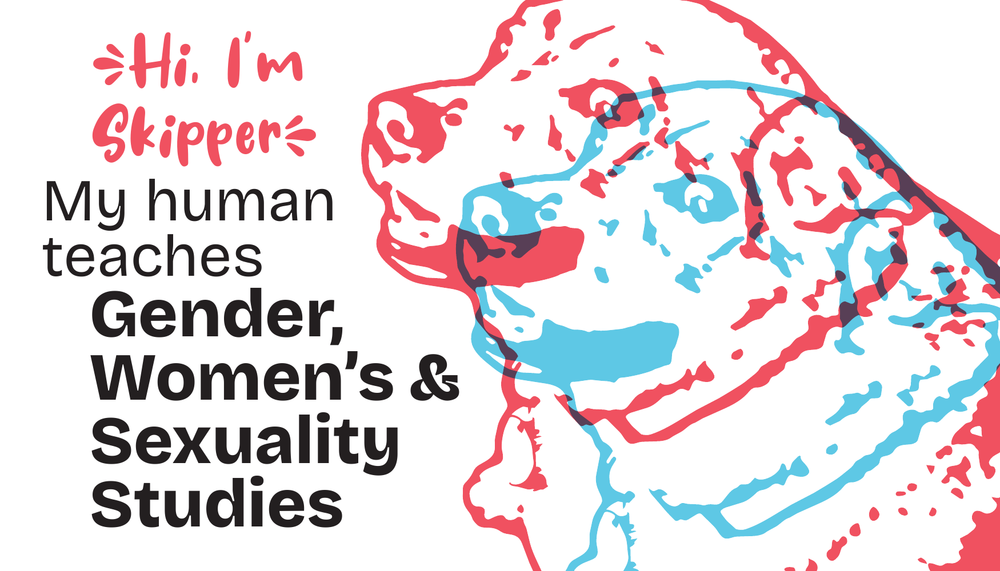
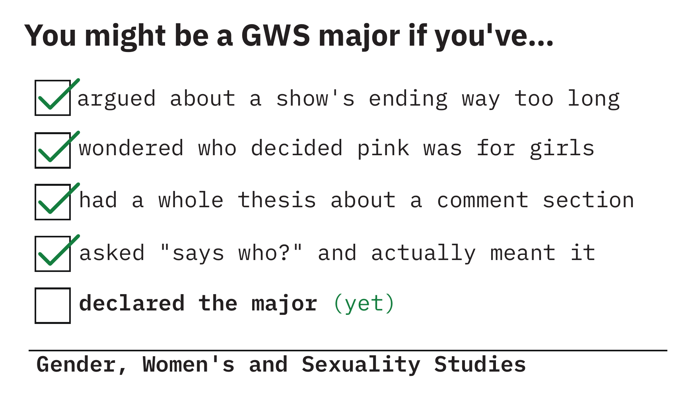

As the communications intern for App State's Gender, Women's & Sexuality Studies program, I write, design, and organize the materials students and faculty use to find the program and find their way around it: the website, the slides on campus screens, the cards handed out at events, and the logo that ties them together.
The internship runs through the 2026-27 academic year. An event program and a promotional video are in production for spring.
Program Logo
GWS Program Logo

A one-color mark with three lockups, so the same logo holds up as a corner badge on a slide, a header on a card, or the full program name on print.
[One or two sentences on the idea behind the mark: what it needed to say about the program, and why this image says it.]
My Role: Concept, drawing, and final files.
Website Copy
GWS Program Website Rewrite
A rewrite of the program's core pages for the reader who has thirty seconds: a prospective student trying to work out what GWS is, what they could do with it, and what to click next.
About
Founded in 1976, Appalachian State University's Gender, Women's and Sexuality Studies (GWS) program is the oldest of its kind in the UNC System and the second-oldest in North Carolina.
Career Development
A GWS degree doesn't lock you into one career path; it opens thousands.
Graduate Minor
A nine-credit add-on for students already in an App State graduate program, built to fit programs with fewer elective hours.
- Pages covered: About, Career Development, Honors and Triota, Student Profiles, Undergraduate Programs of Study (the B.A. and three minors), and Graduate Programs of Study (the certificate and minor).
- Questions as headings: the career page is organized around what students actually ask, such as where majors end up working and what they earn.
- Sourced claims: every statistic names where it came from.
- A next step on every page: each one ends with a link onward or a person to contact.
My Role: Writing and editing in AP style, plus student profile writing.
Campus Screens
Course Slides for Scala Digital Signage
Scala is the system behind the TV screens around App State's campus. GWS uses it to advertise next semester's courses, so each slide has a few seconds to answer three things: what the class is, when it meets, and who can take it.
I built the slides as a template system, not one-off graphics. Every course keeps its own color from semester to semester, and the file includes a color key, how-to notes for each layout, and a submission checklist, so whoever updates them next doesn't start from zero.
Card layout
One course per slide on a bold color field.

Lineup layout
A matching series. The row along the bottom of each slide advertises the other five courses too.

The system and other directions
The color key that governs every slide, and three alternate concepts explored for the same course.


My Role: Design, copywriting, and documentation.
Walk Cards
Walk Card Concepts
Business-card-size handouts that give someone a reason to keep the card and a QR code to act on it. Three concepts, each with a different way in: a dog, a quiz, and a plain answer.
Skipper


You might be a GWS major


So what's GWS?


My Role: Concept, copywriting, and design.
Stickers

GWS Bubble Letters
Fall 2026
In Production
Event Program
[One sentence on what the program is for.] It will be posted here once it's printed.
Program Promo Video
A promotional video for the program, shooting next semester. Photography for it is under way now.